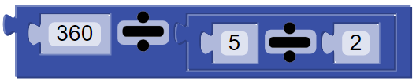
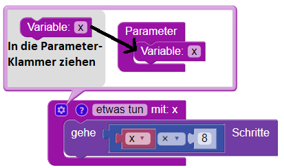
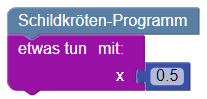
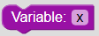

Programmiere die Schildkröte:
Die Schildkröte soll einen 5:2-Stern mit Kantenlänge von 10 Schritten malen.
Hinweis: Um wie viel Grad sich die Schildkröte drehen muss ist abhängig von beiden Zahlen. Für einen 5:2-Stern müsste sie sich also um

° drehen. Die Schildkröte sollte die blaue Kante jeweils zuerst zeichnen.Programmiere die Schildkröte:
Die Schildkröte soll zwei 8:3-Sterne malen. Ein Stern soll eine Kantenlänge von 10 Schritten haben und ein Stern eine Kantenlänge von 5 Schritten.
Hinweis: Um wie viel Grad sich die Schildkröte drehen muss ist abhängig von beiden Zahlen. Für einen 5:2-Stern müsste sie sich also um ° drehen.
Nutze Funktionen um mit der erlaubten Anzahl von Bausteinen auszukommen. Funktionen und Parameter werden unter "weitere Hinweise" erklärt. Die Schildkröte sollte die blaue Kante jeweils zuerst zeichnen.
Weitere Hinweise:
Du kannst einer Funktion Parameter hinzufügen, indem du das Zahnrad anklickst:

Wenn du die Funktion verwendest, musst du einen Wert für den Parameter angeben:

Programmiere die Schildkröte:
Die Schildkröte soll die Sterne 9:4, 15:4 und 5:2 malen. Alle Sterne sollen eine Kantenlänge von 10 Schritten haben.
Hinweis: Um wie viel Grad sich die Schildkröte drehen muss ist abhängig von beiden Zahlen. Für einen 5:2-Stern müsste sie sich also um ° drehen.
Nutze Funktionen um mit der erlaubten Anzahl von Bausteinen auszukommen. Funktionen und Parameter werden unter "weitere Hinweise" erklärt. Die Schildkröte sollte die blaue Kante jeweils zuerst zeichnen.
Weitere Hinweise:
Du kannst einer Funktion Parameter hinzufügen, indem du das Zahnrad anklickst:
Um der Funktion zwei Parameter hinzuzufügen, ziehe

zwei Mal in die Parameter-Klammer. Du musst mindestens einen der Parameter umbenennen.
Wenn du die Funktion verwendest, musst du einen Wert für den Parameter angeben: